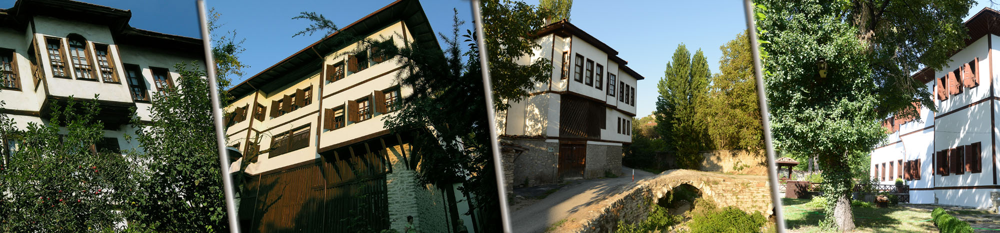
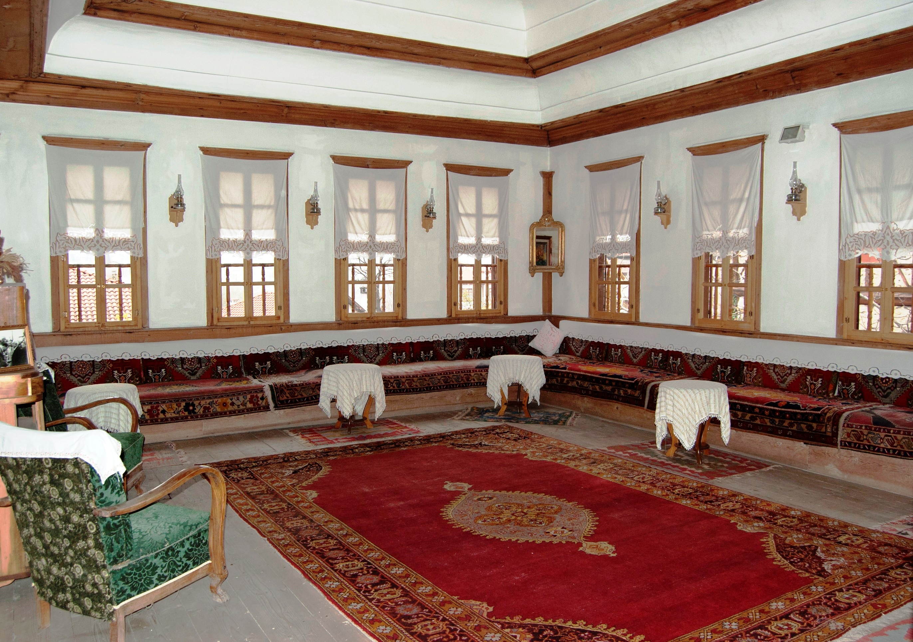
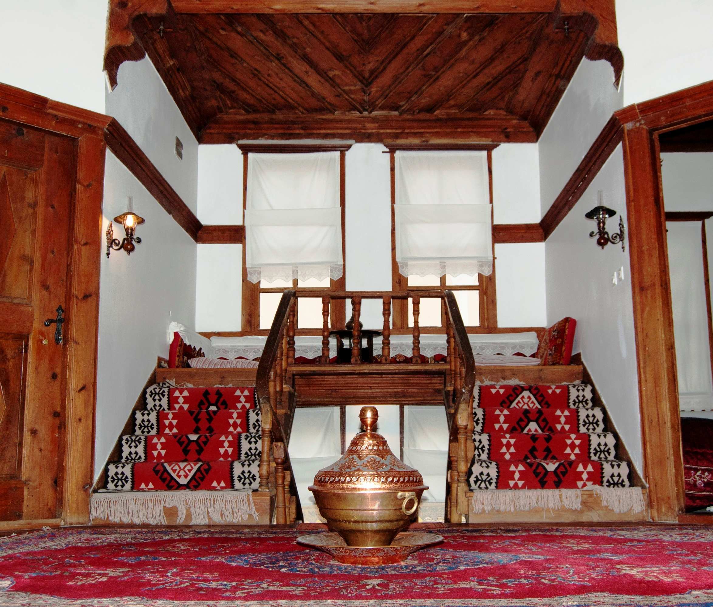
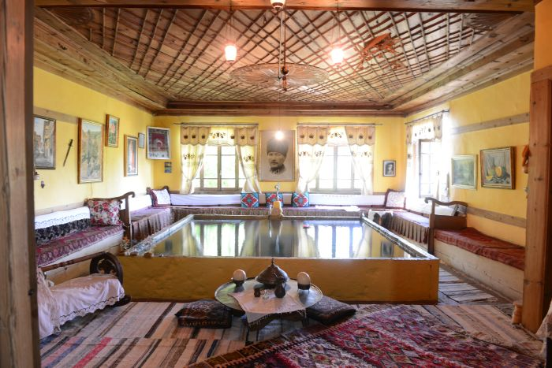
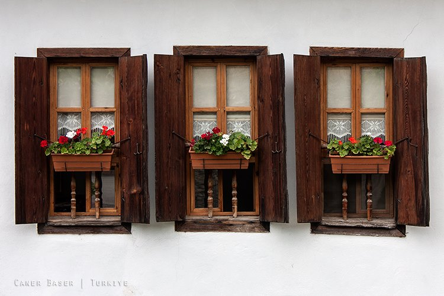
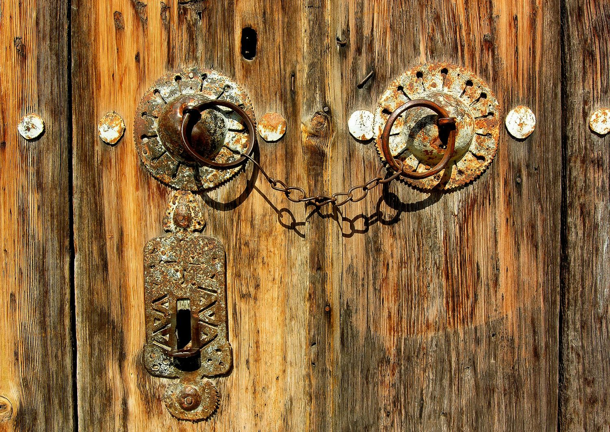
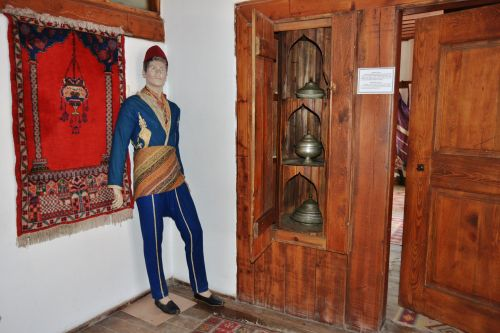

Safranbolu Evleri yüzlerce yıllık bir süreçte oluşan Türk kent kültürünün yünümüzde yaşamaya devam eden en önemli yapı taşlarıdır. İlçe merkezinde 18. ve 19.yy. ile 20.yy. başlarında yapılmış yaklaşık 2000 geleneksel Türk evi bulunmaktadır. Bu eserlerin 800 kadarı yasal koruma altındadır. Evler Safranbolu´nun iki ayrı kesiminde gruplanmış durumdadır. Birincisi “Şehir” diye bilinen ve kışlık olarak kullanılan kesim, ikincisi “Bağlar” diye bilinen ve yazlık olarak kullanılan kesim.
Safranbolu evinin boyutu ve biçimini belirleyen üç temel unsurdan söz edilebilir: Çok nüfuslu büyük aile yapısı, yağışlı iklim, kültürel ve maddi zenginlik. Bir ailede karı kocanın normal olarak iki ya da üç çocuğu vardır. Erkek evlat evlendirilince ona ayrı bir ev açılmaz, gelin aynı eve getirilir. Amcalar, yengeler, halalar ve torunlarında dahil olduğu aile hep birlikte bir evde yaşarlar. Evin kadınına işlerde yardım etmek amacıyla evlerin çoğunda evlatlık kız bulunur. Evlatlık kız evin kızı gibi görülür. Kalabalık aile yapısının yanında evlerde harem-selamlık ayrımı vardır. Ailelerin sahip olduğu hayvanlar evin zemin katındaki ahırlarda barındırırlar. Yağışlı iklim nedeniyle kapalı alan ihtiyacı da fazladır. İnsan ve hayvan yiyecekleri, yakacak odunlar hepsi evin uygun bölümlerinde muhafaza edilirler. İşte tüm bunların sonucu olarak Safranbolu evleri büyük hacimlidir.
  Doğa-insan-ev; sokak-ev, sokak-çarşı ilişkileri son derece düzenli ve dengelidir. Çevreye olduğu kadar komşuya da saygı egemendir. Hiçbir ev diğerinin görünüşünü engellemez. Evlerin yapımında taş, kerpiç ahşap ve alaturka kiremit kullanılmıştır. Bahçeler sokaktan taş duvarlarla ayrılmıştır. Din ve gelenekler evi dışarıya kapar, bu yüzden ev içi ve bahçeler yüksek duvarlarla ayrılmıştır, pencereler kafeslidir, kadın yabancı erkeğe görünmez. Bazen aynı evin içinde bile, kadınlar ve erkekler ayrı ayrı yaşarlar. Safranbolu´da selamlık ve harem olarak ikiye bölünmüş böyle evler vardır. Hacı Memişler Bağ evinde ve Kaymakamlar Evinde harem ve selamlık girişleri değişik katta iki ayrı sokaktan sağlanmıştır. Aile yaşantısını tedirgin etmeden kolay ulaşılabilen bir odası da selamlık olarak kullanılır. Selamlık odaları biraz daha özenlidir. Evin girişinde zemin katta “hayat” vardır. Bu bölüm eğer taş kaplıysa “taşlık” adını alır. Burada ışık almayı sağlayan “gliste” mevcuttur. Zemin katlarda ayrıca ahırlar, büyük kazan ocakları ve ambarlar bulunur. Üst katlara ahşap ustalığının üstün örneklerini sergileyen merdivenlerle çıkılır. İkinci kat diğer katlara göre daha basıktır. Bu katta gerektiğinde yatak odası olarak da kullanılabilen bir mutfak bulunur. Gündelik yaşam orta katta geçer. Soğuk kış günlerinde bu katın ısıtılması daha kolay olur. Üçüncü kat evlerde mükemmelliğe varılan noktadır. Bu katta tavanlar daha yüksektir. Odalara sekiz kenarlı bir çokgenden oluşan sofanın daha kısa olan dört çapraz kenarından açılan kapılardan girilir. Odaların giriş kapıları köşelerdedir ve oda ile doğrudan teması kesen özel ahşap paravana düzeni bulunur. Odaların her biri bir çekirdek aileyi ya da bir aile yakının barındırabilecek tüm unsurlara sahip, bağımsız birim olarak tasarlanmıştır. Bu doğrultuda her odada ahşap dolapların (yüklük) içerisinde bugünün duş kabinlerini andıran gusülhaneler mevcuttur. Safranbolu evlerindeki çıkmalar, evin dış görünümünü tek düzelikten kurtarır. Evlerin pencereleri çok özel biçimde tasarlanmış olup dar ve uzuncadır. Ahşap kanatlı pencerelerde ayrıca “muşabak” denilen kafesler bulunur.
  